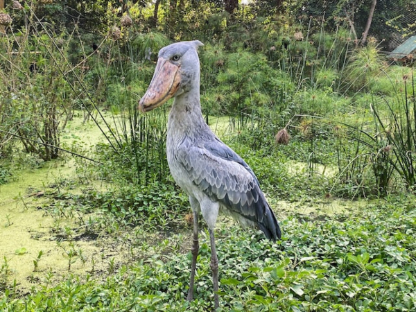
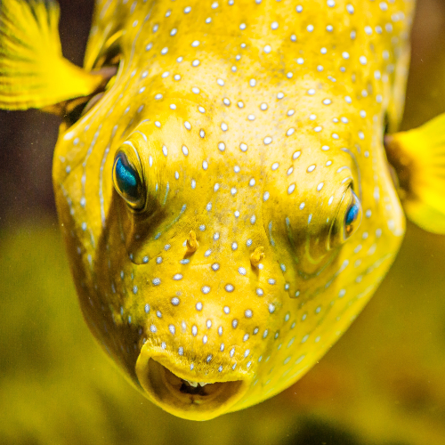
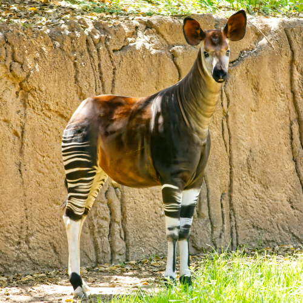
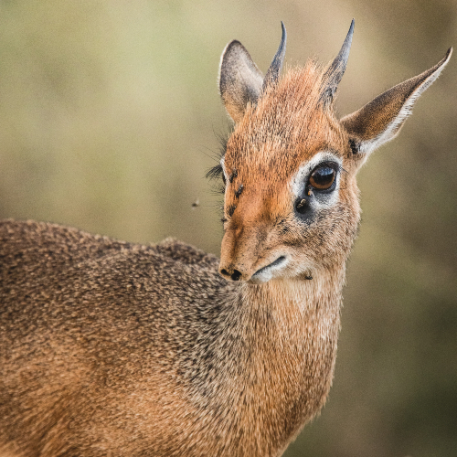

The Shoebill Stork
The shoebill, also known as the whalebill, whale-headed stork, or shoe-billed stork, is a very large long-legged wading bird. It derives its name from its enormous shoe-shaped bill.
Learn More

Absolutely necessary information
The shoebill, also known as the whalebill, whale-headed stork, or shoe-billed stork, is a very large long-legged wading bird. It derives its name from its enormous shoe-shaped bill.
Learn MoreThe shoebill is found in the marshes of Western Africa. Habitat destruction is a major contributing factor to the decline of the species.
Learn MoreVery Cool Echidna
Blobfish Bubbles
What even is this?
Bambi?